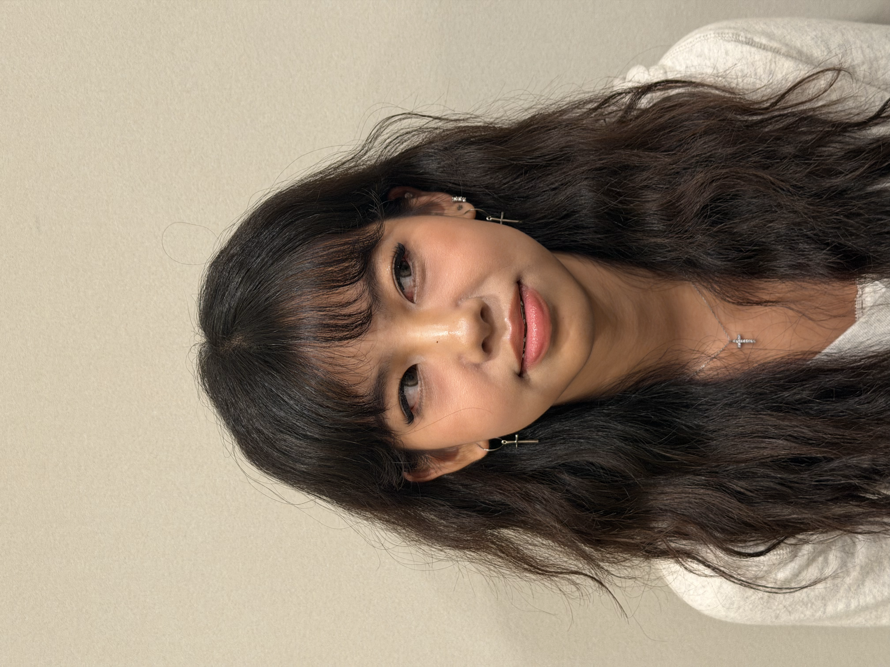
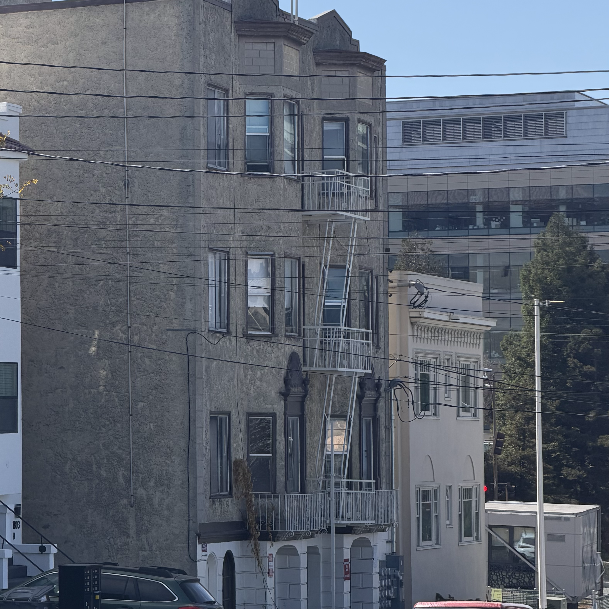
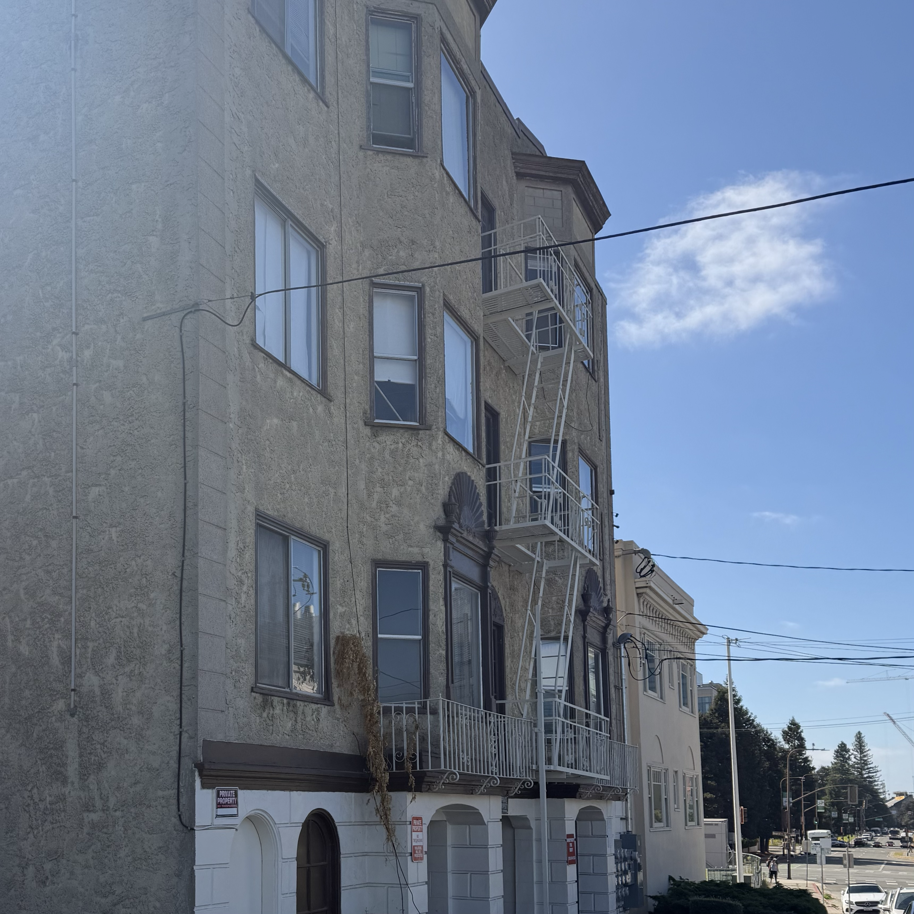
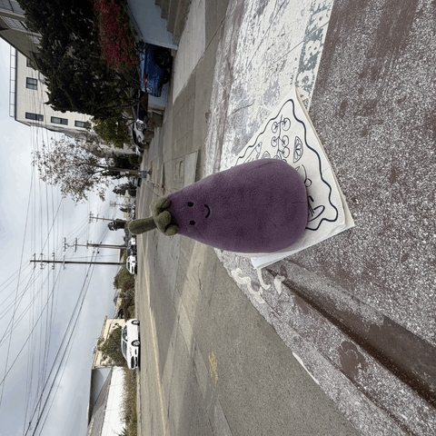

click her face
DISTANCE!
When the camera is CLOSE to the face, features closer, such as the nose, appear larger, creating the distorted look.
FARTHER, the distance differences between facial features are smaller, so the face looks better.

far

close
Farther, perspective is compressed and looks flatter;
Closer, perspective is stronger and shows more depth.
